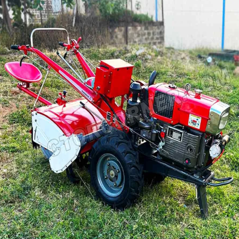
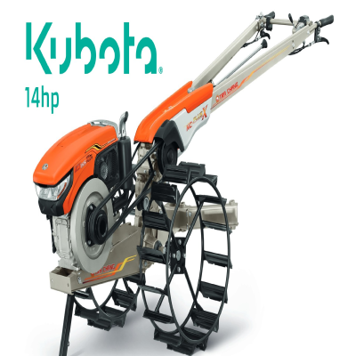
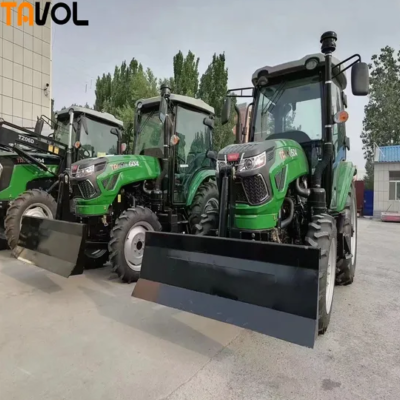
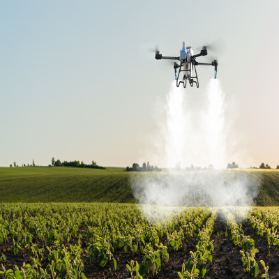

Trakor Tangan Elektrik MT-20, cocok untuk lahan kecil hingga sedang.

Traktor Tangan Kubota 14hp, terawat dan siap digunakan untuk berbagai jenis lahan.

Traktor kompak 4x4 dengan loader depan dan backhoe, ideal untuk pekerjaan pertanian dan konstruksi ringan.

Drone EAvision J70 untuk penyemprotan pupuk dan pestisida secara efisien.